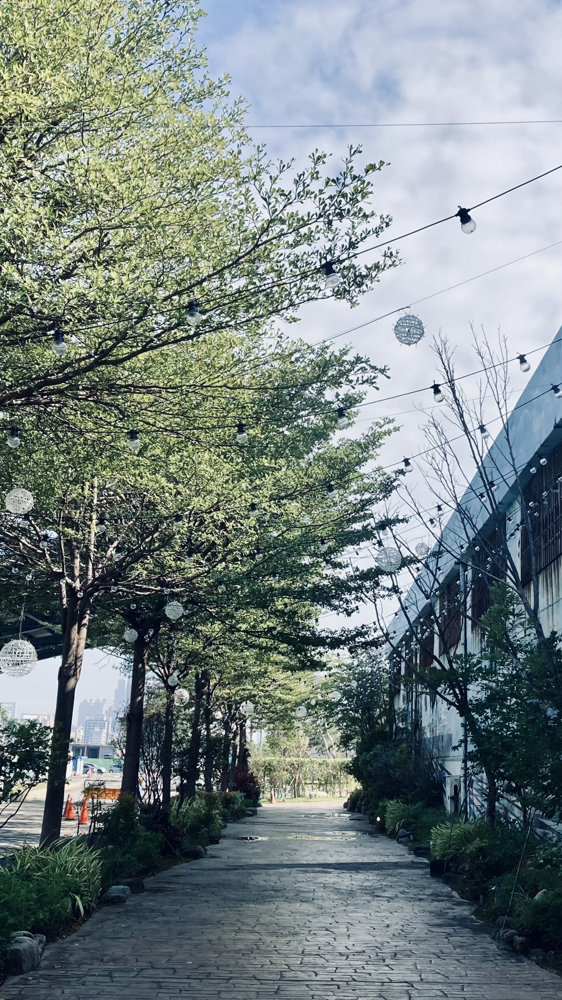
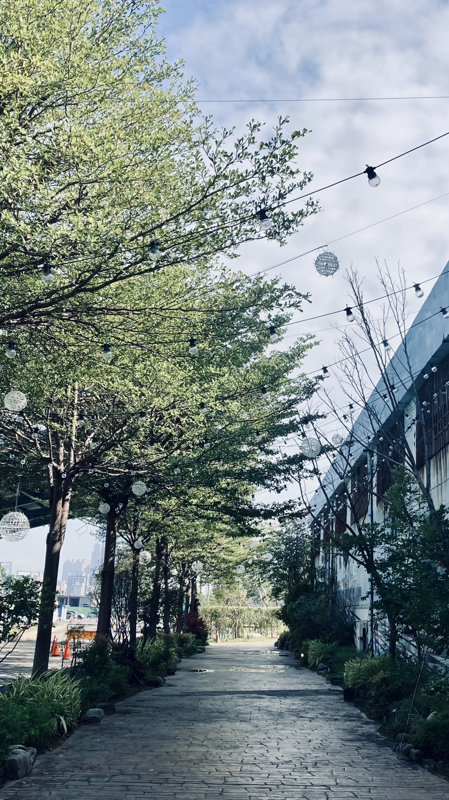
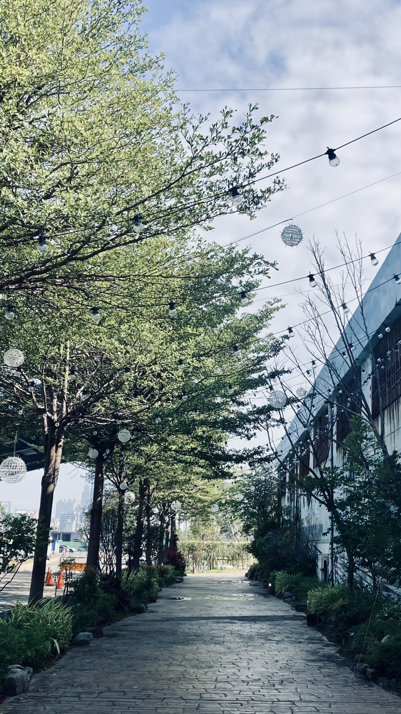

棧貳庫
安妞大家好，我是anni，因為課程的關係，誕生出了這篇第一篇也是最後一篇的旅遊小記，簡直是既興奮又怕受傷害，高雄真的是一個不錯的地方，就是騎車的時候，紅綠燈有點久，總之，歡迎大家來高雄玩，促進經濟發展，創造更美好的未來吧！

這次跟大家介紹的景點是位於高雄市鹽埕區的「棧貳庫」啦！棧二庫位於高雄港二號碼頭旁，在日治時期，是用於儲存及運送砂糖的倉庫，由於二次世界大戰期間遭受美軍轟炸，經過國民政府重建後，才有現在的模樣，非常具有歷史意義！擁有百年歷史建築的棧貳庫，結合高雄港、在地文創以及美食餐廳等等，現在已然成為高雄最熱門的旅遊景點嘍。
停完車後，沿著灰色石子造型的走道，兩側充滿了綠色植物，樹上也掛滿燈泡和球造型的裝置藝術，真的非常適合出門踏青走走，除此之外，這邊還有一個秘境–「高雄水花園」，是結合造景植栽以及蜿蜒水流的開放場域，走進這個小花園就像來到不一樣的世界，四周被花木環繞，中間還有一個小橋跨過水流，簡直太漂亮了
繼續往前走就能看到大大的KW2了，KW2就是高雄港貳號倉庫，也是今天的重點地標！棧貳庫裡面有各式各樣的餐廳，像是牛肉麵、熱炒、或是雞蛋仔這種小點心，應有盡有，我也忍不住買了一個貴賓狗造型的冰淇淋，也太可愛了吧！一樓逛不夠，還可以上去二樓喔，二樓除了座位區，還有許多文創店，記得上次有一個結合化學的商店，這次則是「化石先生Mr.Fossil」進駐了，喜歡收藏化石，或是想買個小東西點綴自己房間的朋朋們一定要來！
由於鄰近高雄港碼頭，旁邊就是一望無際的海，這裡非常適合情侶在下午黃昏的時候來走走、拍照，在這裡一邊散步，一邊吹著海風，也太舒服了
這裡還有IG上最夯的打卡景點–白色旋轉木馬、白色摩天輪，一定是來這裡必坐的設施。在這裡包你吃喝玩樂，如果想高雄一日遊，絕對是不錯的好去處！